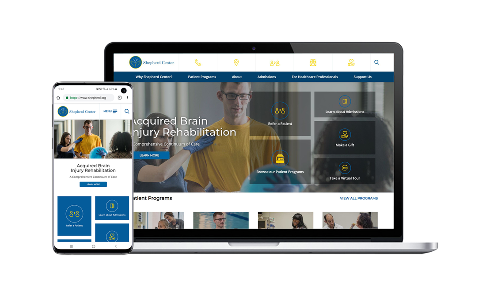
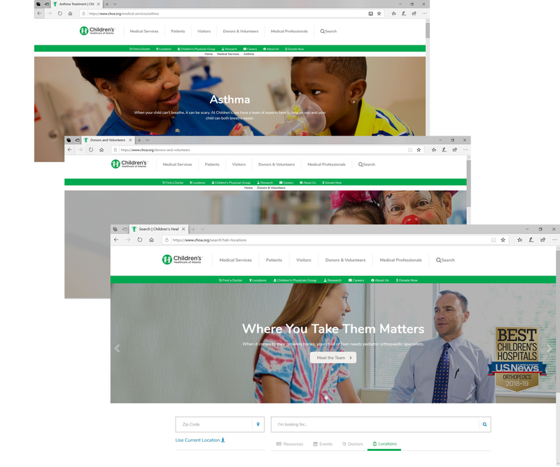
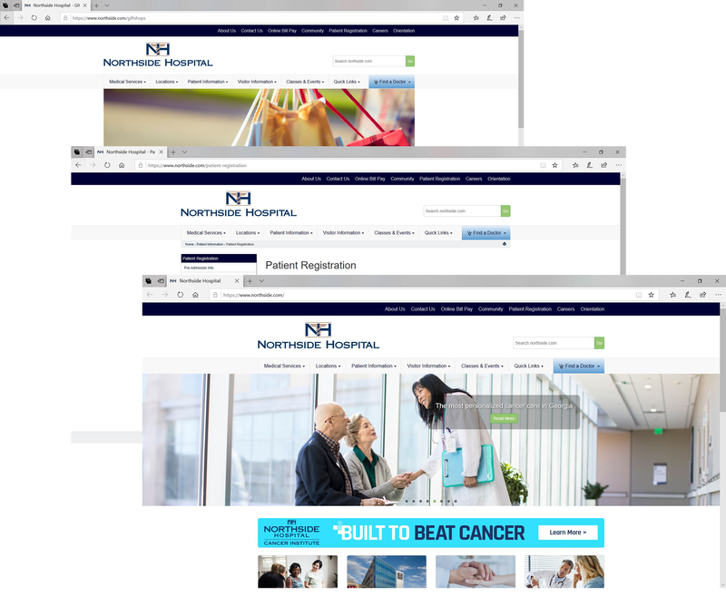
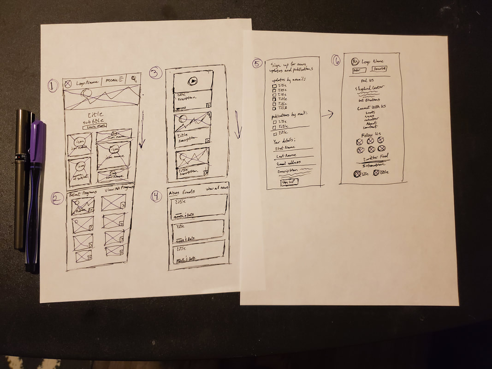
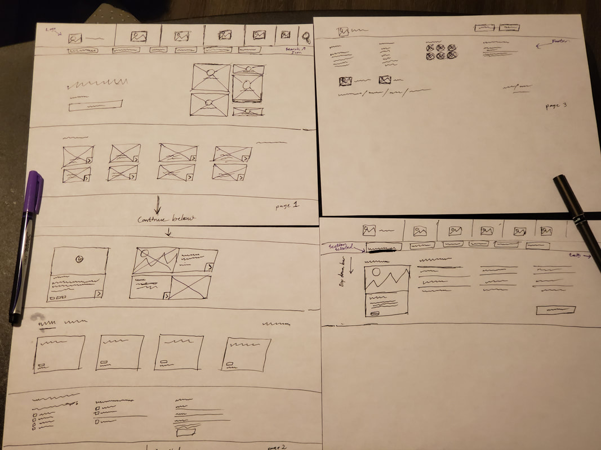
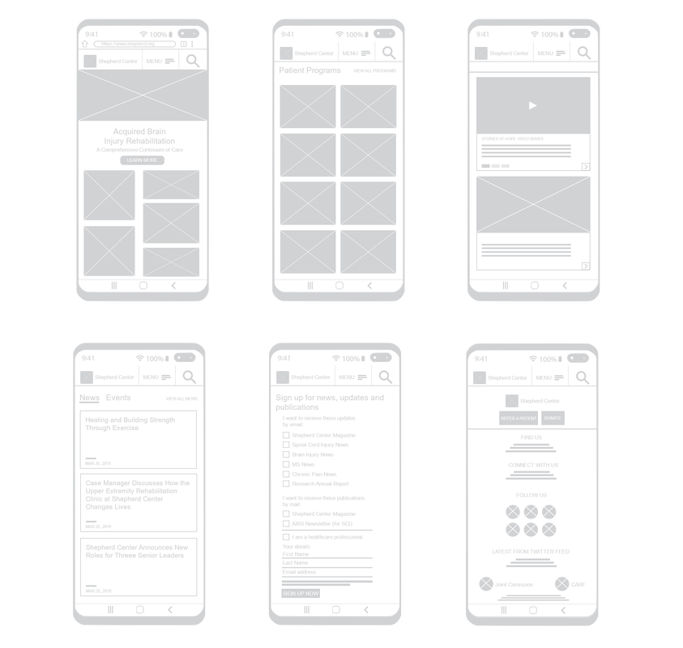
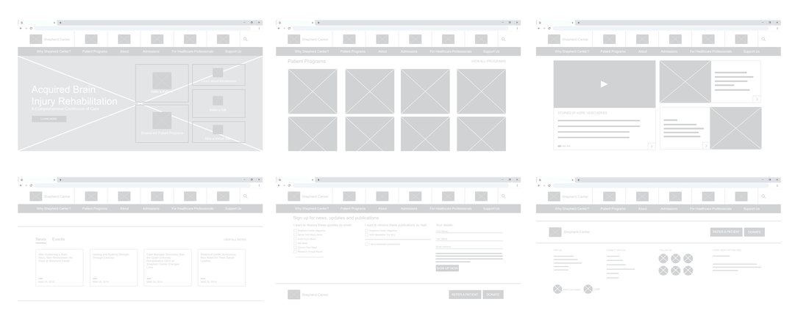
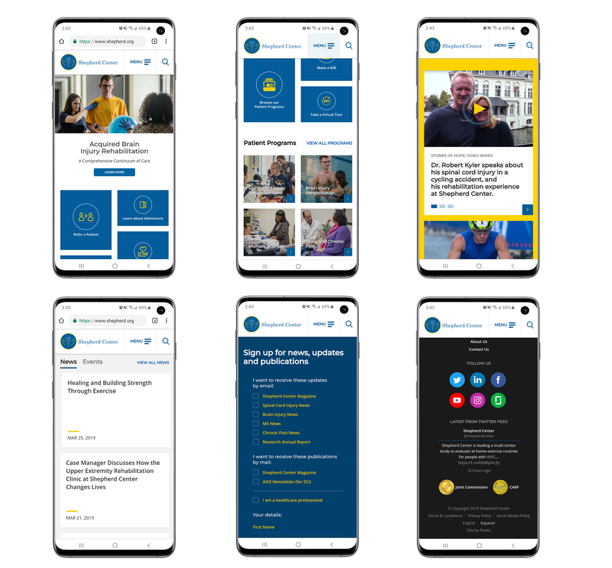
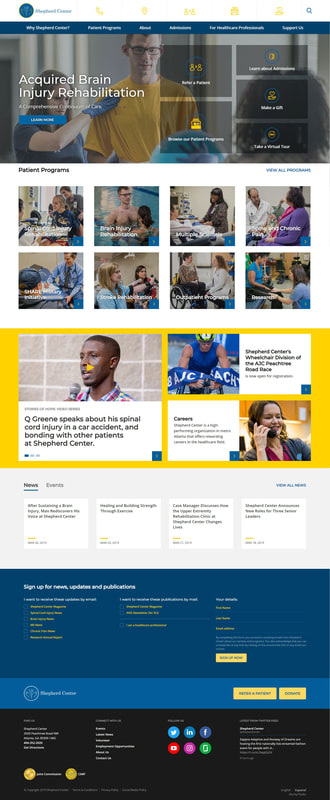

Shepherd Center
Website Redesign
A user-centered redesign for one of the nation's leading rehabilitation hospitals

Shepherd Center is a nationally recognized nonprofit rehabilitation hospital specializing in the treatment of spinal cord injuries, traumatic brain injuries, multiple sclerosis, chronic pain, and other complex neurological conditions.
As part of a multidisciplinary design team, I contributed to the redesign of the Shepherd Center website to improve navigation, strengthen the organization's digital presence, and create a more intuitive experience for patients, caregivers, healthcare professionals, and donors.
My primary responsibilities included creating wireframes and interactive prototypes that translated research insights into a user-centered web experience.
The existing website contained a wealth of valuable information, but its structure made it difficult for users to locate the content they needed quickly.
Common issues included:
- Complex navigation
- Inconsistent page layouts
- Weak visual hierarchy
- Limited alignment with the Shepherd Center brand
- Difficulty locating key actions such as patient referrals, program information, and donations
Because the website served multiple audiences, including patients, families, physicians, and donors, the challenge was creating a unified experience that supported each group's goals without overwhelming them.
I collaborated closely with designers and stakeholders throughout the design process to ensure the final experience reflected both user needs and organizational objectives.
The interface was designed using Shepherd Center's brand colors to create a clean, trustworthy healthcare experience. The visual language emphasized accessibility, readability, and confidence while supporting the organization's nonprofit mission.
Before designing solutions, we conducted research with healthcare professionals and patients to better understand how they interacted with the website. Our interviews revealed several recurring priorities.
Users wanted quick access to:
- Patient programs
- Physician referral information
- Donation opportunities
- Patient success stories
- Current news and events
- Educational resources
The research also highlighted a desire for simpler navigation and more visually engaging content that reduced the effort required to find important information.
To better understand expectations for modern healthcare websites, we evaluated several comparable organizations. Across these sites, we observed consistent design patterns:
- Clear messaging that quickly communicates the organization's mission
- Strong visual storytelling through photography and video
- Digestible content organized into manageable sections
- Prominent calls to action
- Streamlined navigation
- Distinctive features that reinforced each organization's identity
These findings helped inform our approach while ensuring the redesigned experience reflected Shepherd Center's unique mission.


Rather than focusing solely on aesthetics, we centered the redesign around the tasks users visited the site to complete most often.
Priority experiences included:
- Finding patient programs
- Referring a patient
- Learning about treatment options
- Making a donation
- Reading patient success stories
- Staying informed about news and events
This task-oriented approach influenced both the site's navigation and overall information architecture.
My primary contribution was translating research findings into interactive wireframes and prototypes. I first created low-fidelity paper prototypes for both desktop and mobile experiences to quickly explore layout concepts and validate navigation before investing in higher-fidelity designs.
Once the overall structure was established, I developed interactive prototypes that were used during usability testing to gather feedback and refine the experience prior to development.




The redesign was planned with responsive behavior in mind from the beginning rather than treating mobile as an afterthought.
Design considerations included:
- Simplified navigation
- Improved touch targets
- Readable typography across screen sizes
- Flexible content layouts
- Consistent visual hierarchy
- Streamlined browsing across desktop and mobile devices
The goal was to ensure users could complete key tasks regardless of the device they used.


The redesign produced a modern, user-centered website experience that made key information easier to discover and important actions easier to complete. The new experience emphasized:
Note: Shepherd Center has since launched a newer version of its website. This case study showcases my design contributions to the 2017 redesign.
This project taught me that effective healthcare UX extends beyond visual design. It requires balancing the needs of multiple user groups while ensuring critical information remains easy to find.
One of the biggest lessons was the importance of prioritizing user goals over organizational structure. By organizing content around the tasks people came to accomplish, rather than how the organization was internally structured, we created a more intuitive experience that better supported patients, caregivers, healthcare professionals, and donors.
It also reinforced the value of early prototyping and usability testing. Identifying navigation issues during the design phase allowed the team to refine the experience before development, reducing costly revisions later in the project.